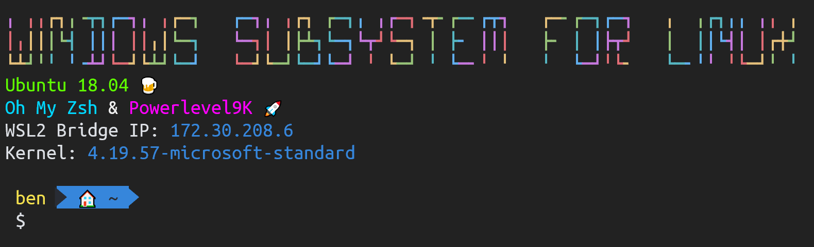

Terminal & WSL Guide
I've found using Windows Subsystem For Linux (WSL) in the last two years has transformed how I use my Windows machine for development and general tech & cloud work. The new Terminal has further cemented this new reliance on the command line.
Seems like I'm not alone, lots of people seem very interested in the new Windows Terminal and also how to use it with WSL. I've just been though the process of a fresh setup of the new Terminal & WSL from scratch, so I figured it was a good time to write up how I set it up and use it.
I've already written about WSL v2 in a previous post, and as it's still a bit experimental it's probably worth ignoring for now. With that in mind everything I'll run through will assume you're setting up & using WSL v1 just to keep it simple (for now). I'm going to keep thing pretty to the point and factual as much a possible.
Install
It's best to install WSL first that way the Terminal will pick it up and create a profile for it.
Windows Subsystem For Linux (WSL)
WSL has been available as part of Windows 10 for a while now, and is installed via the Microsoft Store. There's a range of Linux distros to pick from I personally use Ubuntu, but use what ever flavour you like, and if you're new to this Linux business, Ubuntu is a good choice.
Browse WSL distros on the Store
You'll need to enable ‘Windows Subsystem for Linux’ feature in the ‘Windows Features’ control panel before it will install. You can either do this manually when prompted or use PowerShell as described in the docs. Note. This will require a reboot.
From here I'll assume you've installed and initialized WSL, i.e. logged in & set it up with a new user account. If you need help the docs also have you covered. The first time you access it you don't need to use the new terminal, a shortcut will be put in the start menu which will access WSL using the legacy (conhost) terminal that has been in Windows forever
Windows Terminal
The Windows Terminal is also now available on the Windows Store, it's still in “early preview” but seems fairly stable.
This requires you to be on Windows 10 update 1903, but nothing else special.
Microsoft Store - Windows Terminal
Configuring the Terminal
The Terminal should detect at first start what shells are available and set up profiles for them, namely: WSL, Azure Cloud Shell, PowerShell Core, and for those living in the past - CMD and classic PowerShell.
These are mostly sensible defaults (even if the font sizes are a bit tiny) however I'll dip into how to personalize things and some of the changes I've made in my setup.
Currently there is no UI for the profiles/settings, it simply opens profiles.json in your default text editor. However this has an advantage that it's easy to share settings. Here's my personal config
Some changes I have made:
- Enabled split panes. This is currently kind of a hidden setting, it's enabled in the software just not available until you manually add the config to map it to a keybinding. Edit your
profiles.jsonand the keybindings array, and addsplitHorizontalandsplitVertical, I mapped these toctrl+shift+dandctrl+shift+ebut it's a matter of personal preference - Modified the default microscopic font sizes, see
fontSizein each of the profiles - Configured the background transparency with the
useAcrylic,acrylicOpacityandbackgroundsettings. It takes a bit of fine tuning to get something that looks good - Added
"padding" : "5, 5, 5, 5"to each profile, as I think it looks better - Placed a logo in the bottom right of my main profiles (WSL/CLoudShell/PowerShell) to help distinguish between them. This is done with a combo of the
backgroundImage,backgroundImageOpacity,backgroundImageStretchModeandbackgroundImageAlignmentsettings - I wasn't 100% happy with the builtin colour schemes, so I copied the ‘Campbell’ one to ‘Custom’ and tweaked some of the colours
If you want to know more check out the full docs on the settings schema
Some gotchas I have tripped over:
- The profile icon (the one shown on the tab) will look bad if it's not already sized to 24x24
- If manually setting up a profile for WSL be aware of the -d switch to pick the distro you want, e.g.
"commandline" : "wsl.exe -d Ubuntu"this way you can have multiple profiles one for each distro on your system - Another WSL gotcha is the starting directory setting, which you normally want to be your home directory inside the WSL distro, e.g.
"startingDirectory": "//wsl$/Ubuntu/home/ben"(with forward slashes). If not set correctly the session will start in Windows/System32, not what you want!
Note. If you get really in a pickle you can delete/rename your profile.json (located inside %LOCALAPPDATA%\Packages\Microsoft.WindowsTerminal_8wekyb3d8bbwe\RoamingState\) and Terminal will create a fresh one at next start
Setting up zsh
Zsh is an alternative shell to bash which has lots of modern features. The ones I really like are automatic cd (just type a directory name), and the context aware history, which means you could type docker bu and hit up arrow to get the last docker build blah command you ran even if it was hundreds of commands ago. Oh and lots of nice support for theming.
Installing zsh and making it your default shell is pretty simple:
sudo apt update
sudo apt install -y zsh
chsh -s $(which zsh)
After this, close the current shell/session/window and open a new one. Unless you already have a .zshrc file (unlikely) you will be prompted with the “Z Shell configuration function for new users”, and a number of choices. Which option you choose to take is up to you, but option 2 is good choice if you're unsure
Now you're really going to want to install ‘Oh My Zsh’ which like a turbo charge for zsh and simple way to start theming and tweaking your shell & prompt to your tastes. Installing and enabling ‘Oh My Zsh’ is pretty simple, it can be done in one command:
sh -c "$(curl -fsSL https://raw.githubusercontent.com/robbyrussell/oh-my-zsh/master/tools/install.sh)"
From here I strongly advise you access your WSL via the new Terminal which has unicode support need for ‘Oh My Zsh’ themes etc, otherwise you're going to have an ugly time with the old classic terminal
The prompt is pretty boring by default and probably not what you where expecting. The trick is to enable a custom ‘Oh My Zsh’ theme, you can check out a list of included themes on the wiki. You enable a theme by editing your .zshrc file e.g. nano ~/.zshrc, you should see a variable ZSH_THEME near the top, which you can point to one of the themes on the wiki. For example ‘agnoster’ is a nice looking theme, you could enable it with ZSH_THEME=agnoster
Oh no, it looks rubbish? That's because you need some special fonts for it to really work. If we're going to all that trouble let's really up our game and install new theme too.
Powerlevel9k and Powerline Fonts
I use Powerlevel9k as my theme it looks great and has a load of options.
Installing Powerlevel9k is a simple git clone:
git clone https://github.com/bhilburn/powerlevel9k.git ~/.oh-my-zsh/custom/themes/powerlevel9k
Then edit your .zshrc and set ZSH_THEME="powerlevel9k/powerlevel9k"
OK so it's still looking manky, you can fix that by installing the font(s) we need. There's a number of ways to do this, the one I use is to download a pack of “Powerline patched” fonts from github.com/powerline/fonts unzip and just install the TTF file you want to use/try. I've stuck with ‘Ubuntu Mono derivative Powerline.ttf’ as I like the look of the Ubuntu Mono font (P.S. don't worry about the variants like bold and italic)
Next you'll need to tell Windows Terminal to use the font by changing the fontFace setting your profiles.json, e.g. "fontFace" : "Ubuntu Mono derivative Powerline". If everything has gone to plan, you should finally have a swish looking zsh prompt.
It's worth mentioning that Powerlevel9k has a tonne of options. This is where you can get really creative. Below is my personal Powerlevel9k configuration (in .zshrc of course) and yes I use emoji/unicode as icons, the new Terminal displays them just fine 😍
POWERLEVEL9K_HOME_ICON=🏠
POWERLEVEL9K_HOME_SUB_ICON=📁
POWERLEVEL9K_FOLDER_ICON=🔨
POWERLEVEL9K_VCS_GIT_GITHUB_ICON=😺
POWERLEVEL9K_PROMPT_ON_NEWLINE=true
POWERLEVEL9K_SHORTEN_DIR_LENGTH=1
POWERLEVEL9K_SHORTEN_STRATEGY=truncate_folders
POWERLEVEL9K_CONTEXT_TEMPLATE="%n"
POWERLEVEL9K_LEFT_PROMPT_ELEMENTS=(context dir virtualenv vcs)
POWERLEVEL9K_MULTILINE_FIRST_PROMPT_PREFIX=""
POWERLEVEL9K_MULTILINE_LAST_PROMPT_PREFIX=" $ "
My personal Ubuntu/Linux config
Lastly to wrap up I thought I'd cover a little of my personal WSL setup and config.
I had tried to go down the “dotfiles stored in git” route which is popular. Personally found it fiddly, complex and overkill when all I wanted was a way to back-up my config. So I've settled on a way of working that I'm happy with
Back up & Setup Scripts
As I've come to rely on WSL more & more, I realized losing my config and files would be pretty disastrous. To this end I've setup a couple of things:
- Backup. Since Windows 10 1903 you've been able to access the WSL filesystem from Windows via the
\\wsl$path. With this in place, I created a backup script that runs from Windows (written in PowerShell) and copies my critical dotfiles and other directories over to my OneDrive folder. It's all a little crude but has worked for me so far. The script is scheduled in Windows Task Scheduler - Setup. To make re-installation of my system as painless as possible, I wanted a way to easily reinstall all the tools, SDKs, and utilities that I use. For this I create a small setup script for each one, and copy and paste whatever install commands I run. More often or not this might be a simple
sudo apt install foobut having the script serves as a useful reminder what I've installed. I keep all scripts in setup directory and keep this under git source control linked to GitHub. This has the side benefit I can share these scripts with others
Logon banner
I've had questions about my logon banner, it's fairly “fabulous” and a probably somewhat OTT but I've grown rather attached to it :) 
The silly colourful text is done with with a command bizarrely called toilet. The rest of it is just echo commands (with the -e switch) at the end of my .zshrc, the colours are embedded ANSI escape sequences and the icons are emoji simply copy and pasted directly in the file, e.g.
echo -e "\e[38;5;82mUbuntu 18.04 🍺"
Conclusion
I've found WSL to be essential tool for development, and the new Terminal makes it even better. A customized setup might look a little complex but can be run through quickly and easily and will certainly boost productivity.